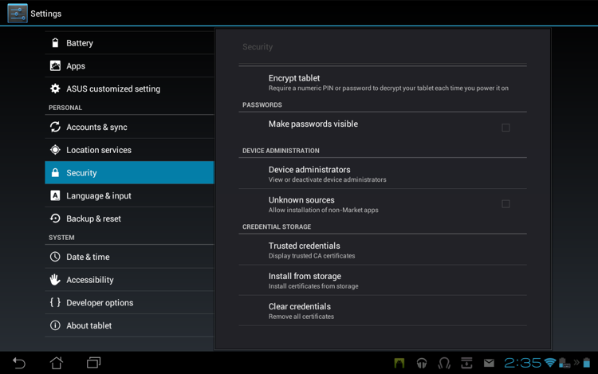
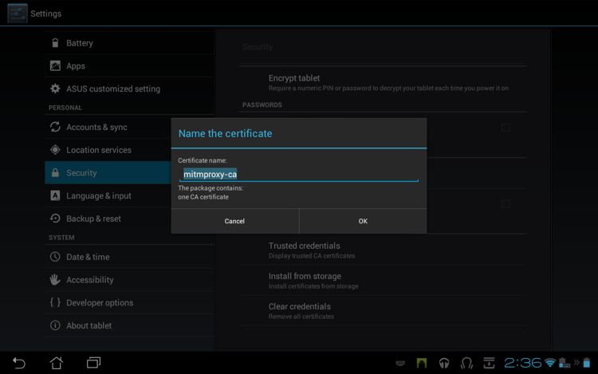
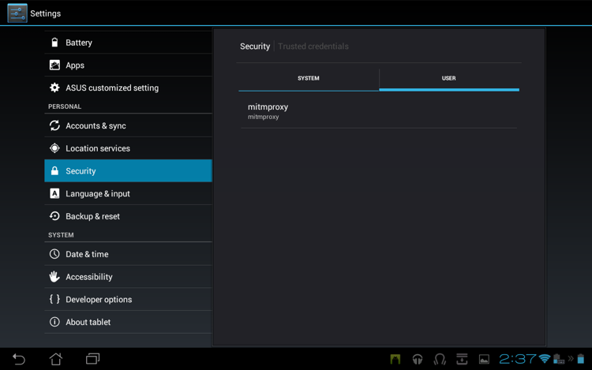

The proxy situation on Android is an embarrasment. It's scarcely credible, but Android didn't have a global proxy setting at all until quite recently, and it's still not supported on many common Android versions. In the meantime the app ecosystem has grown used to life without this basic necessity, and many apps merrily ignore it even if it's there. This situation is improving, but in many circumstances using transparent mode is mandatory for testing Android apps.
We used both an Asus Transformer Prime TF201 (Android 4.0.3) and a Nexus 4 (Android 4.4.4) in the examples below - your device may differ, but the broad process should be similar. On emulated devices, there are some additional quirks to consider.
The easiest way to get the certificate to the device is to use the web app. In the rare cases where the web app doesn't work, you will need to get the mitmproxy-ca-cert.cer file into the /sdcard folder on the device (/sdcard/Download on older devices). This can be accomplished in a number of ways:
Once we have the certificate on the local disk, we need to import it into the list of trusted CAs. Go to Settings -> Security -> Credential Storage, and select "Install from storage":

The certificate in /sdcard is automatically located and offered for installation. Installing the cert will delete the download file from the local disk.
You should now see something like this (you may have to explicitly name the certificate):

Click OK, and you should then see the certificate listed in the Trusted Credentials store:
